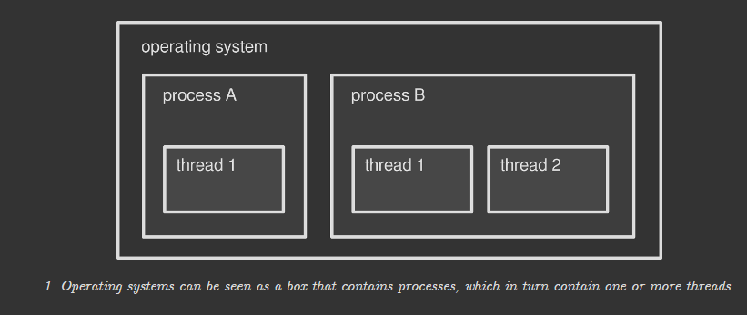
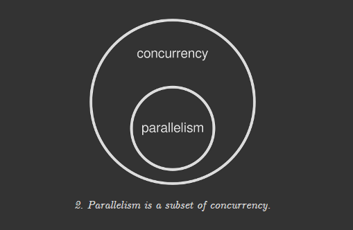

进程与线线程的翻译文章
A gentle introduction to multithreading
https://www.internalpointers.com/post/gentle-introduction-multithreading
额，才发现评论里，已经有人翻译了。时间是2019年3月份。
转载：
一次一步，走进并发的世界。
现代计算机有能力在同一时间执行多个操作。随着硬件的进步和操作系统的发展，这项特性让程序运行得更快，无论是在执行速度上还是在响应性上。
编写利用到此特性的软件另人着迷但也需要更多技巧: 你需要明白计算机底层发生了什么。本系列第一篇将对 线程(threads) 进行概述。在这些魔法背后，线程是操作系统(os) 提供的工具之一。
进程(process)和线程(thread): 对号入座
现代操作系统能够在同一时间运行多个程序. 这也是为什么此刻你可以在浏览器中阅读本文，同时又能使用音乐播放器听音乐的原因(浏览器和播放器是两个不同的程序)。每一个运行的程序都会是一个进程(process)。操作系统知晓很多软件技巧，使得多个进程可以一起运行，并能利用好底层的硬件。无论怎样，最终的结果都是，用户 感觉 所有的程序是同时跑着的。
多进程并非操作系统中在同一时间执行多条任务的惟一方法。每个进程内部也可能同时跑多个子任务，这被叫做 线程(threads)。可以把线程当作进程的切片。每个进程启动时至少激活了一个线程，这个线程叫做 主线程(main thread)。然后，根据程序或程序设计者的需要，额外的线程会被创建或终止。多线程(multitreading) 就是关于单个进程内跑多个线程的。
例如，很有可能你用的播放器就跑了多个线程: 一个用来渲染用户界面(通常是主线程)，另一个用来播放音乐。
可以把操作系统当作持有多个进程的容器，而每个容器本身也持有多个线程。本篇文章主要关注线程，完整的话题很吸引人，值得未来写一篇更深入的分析文章。

- 操作系统可以被看作包含了很多进程的盒子，而进程本身则包含了很多线程。
进程和线程的区别
操作系统为每个进程分配了自己的一片内存。通常这片内存不与其它进程共享：你的浏览器没法访问你的播放器的内存，反之亦然。把浏览器打开2次也遵循同样的规则，操作系统把一个应用的每个实例都当作一个独立的进程，每个进程都有会分配自己的独占内存。所以，两个或多个进程之间默认无法分享数据，除非它们应用了更高级的技巧–所谓的 进程间通信 (IPC).
和进程不同，线程与其所在的进程共用一片操作系统分配的内存：播放器主线程内的数据可以轻易地被音频引擎访问到，反之亦然。因此，线程之间通信更加容易。在此基础上，线程通常比进程更轻量：它们资源占用得更少，更易创建。这也是我们称呼线程 轻量化的进程(lightweight processes) 的原因。
线程让你的程序在同一时间执行多个操作变得方便。没有线程，你要针对每个任务写一个程序，每个任务跑一个进程，并利用操作系统对它们进行同步。这样做更难(进程间通信是棘手的)、更慢(进程比线程的开销更重)
绿色线程，或 纤程
目前为止，我们讨论的线程都是操作系统层面的：一个进程想创建一个新线程，必须告诉操作系统。然而，不是每个平台都原生支持线程。绿色线程(green threads), 也叫 纤程(fibers) 是一类模拟，它使得多线程程序在没有多线程支持的环境下也能工作。例如，在底层操作系统没有原生线程支持的情况下，某些虚拟机会实现绿色线程。
绿色线程的创建和管理都更快速，因为它们完全绕过了操作系统，但也有一些缺点。这个话题在后续的文章中会提到。
绿色线程(green threads) 这个名字来自于 Sun Microsystem的绿色小组(Green Team), 90年代Java 线程库的初版即在这里设计。今天Java已不再使用绿色线程，在2000年时，他们切换到了原生线程。其它的一些语言–Go, Haskell 或 Rust, 举这几个例子 – 没有使用原生线程，而是实现了和绿色线程类似的功能。
线程的用途
进程为什么要使用多个线程？之前提到过，并行可以加快速度。比如，你打算在电影编辑器中渲染一部电影。编辑器可以聪明到将渲染操作分拆给多个线程，每个线程负责处理一部分数据。所以如果让一个线程来做需要1小时，那么2个线程只需要30分钟，而4个线程15分钟就行了，如此这般。
事情真的这样简单吗？有3个重要的点要考虑：
- 不是所有程序都需要多线程。如果你的程序执行的是顺序操作或者总是等待用户操作，多线程不会带来多少好处；
- 引入更多线程不一定会让程序跑得更快：每个子任务必须精心设计以保证并行执行；
- 多个线程并不能保证100%并行，即，同一时间执行：这取决于底层硬件。
第3点至关重要：如果你的计算机不支持同一时间多个操作，操作系统必须进行模拟操作。这一点后面会说到。暂时地，我们把并发(concurrency)描述为在同一时间执行多个任务的感受(perception)，而**真实的并行(true parallelism)**是多个任务确确实实地在同一时间运行着。

- 并行是并发的子集.
什么让并发和并行成为可能
程序的运行依赖于计算机中的中央处理器(CPU)。它由多个部分组成，主要的部分被称作 核心(core)：运算就是在这里执行的。一个核心一次只能运行一个操作。
这自然就成了主要的缺点。为解决这个问题，操作系统发展出了高级技巧，让计算机有能力同时跑多个进程(或线程)，尤其在图形界面环境中，即使是单核机器。其中最重要的部分叫做 先占式多任务处理(preemptive multitasking), 这里 先占(preemption) 是这样一种能力: 中断一个任务，切换到另一个任务，稍后再恢复先前中断的任务。
所以，如果你电脑的cpu只有一个核心，操作系统的职责之一就是将单核的运算能力分拆给多个进程(或线程)，让它们循环地相继执行。这给了我们一种假象，以为有多个程序在并行运行或者一个程序同时做着多件事情(多线程情况下)。这样并发便实现了，但 真正的并行 – 同一时间跑多个进程的能力 – 仍然是缺失的。
时至今日，现代cpu的核心通常不只一个，每个核心都能独立的一次执行一个操作。这意味着，有了多核心，真实的并行有了可能。比如，我自己的 Intel Core i7 有4个核心：它在同一时刻能跑4个不同的进程(或线程)。
操作系统能监测到cpu的核心数并给它们分配进程或线程。线程可能被分配到任意一个核心上，而且这种调度对于程序是透明的。先占式多任务机制在所有核心都繁忙时也可能介入。这使得计算机有能力执行比核心数更多的进程和线程。
多线程应用在单核机器上：有意义吗？
单核机器无法实现真正的并行。不过单核机器上的多线程仍然是有意义的，如果你的程序能够受益的话。当一个进程用到了多线程时，先占式多任务机制可以使你的程序正常的运行，即使某一个线程很慢或者阻塞了。
比如，你在用一个桌面应用从一个慢速硬盘上读取数据。如果该桌面应用只有一个线程，在读取操作结束前，整个程序都是卡住的：在等待硬盘操作时，赋予该线程的cpu就浪费掉了。当然，除了这个程序外，操作系统还在跑着其它进程，但你在用的这个程序不会有任何进展(除了等待)。
让我们以多线程方式重新思考这款程序。线程A负责访问硬盘，同时线程B负责处理用户界面。当因为硬盘读取速度慢导致线程A僵住时，线程B仍然管理着用户界面，程序不会丧失响应。这样做是可行的，因为有了2个线程后，当其中一个卡住后，操作系统可以将CPU资源切换给另一个线程使用。
线程越多，风险越多
上面谈到，线程和其所在进程共享内存。这使得在一个应用内线程间交换数据变得极其简单。例如，视频编辑器占有了包含视频时间线的内存区域，这片内存又被一些工作线程读取并渲染到文件中。它们只需要一个把手或指针(pointer)指向那个区域，就能够读取它的内容并写入磁盘。
一切都很顺利，只要两个或多个线程只是从同一内存进行读取操作。问题发生在当有至少一个线程往共享内存执行写入操作而同时有其它线程在读取时。此时可能发生2类问题：
- 数据竞争(data race) – 写线程在修改数据时，读线程在执行读入操作。如果写线程还未完成操作，读线程获取的是脏数据。
- 竞态条件 – 读线程只应该在写线程写完后执行读取操作。如果不是这样会怎样？比数据竞争更微妙，竞态条件是关于两个或多个线程以不可预测的顺序执行任务，而实际上这些任务要以特定的顺序执行。即使没有数据竞争，程序也可能出现竞态条件。
线程安全的概念
没有数据竞争和竞态条件的代码被认为是线程安全的(thread-safe), 即使有多个线程同时执行的情况下。你可能注意过，一些程序库声明自己是线程安全的。如果你在写多线程程序，你会想知道第三方函数在多个线程中执行是否会导致并发问题。
数据竞争的根由
我们知道一个CPU核心一次只能执行一个机器指令。这样的指令被称作原子的(atomic)，因为它不可再分了：它无法被分成多个更小的操作。在希腊语中，单词**atom(ἄτομος; atomos)**意即 不可切分的(uncuttable)
不可切分的特点使得原子操作天生线程安全。一个线程对共享数据进行原子写操作时，操作结束前没有其它线程能读取到该次修改。相反地，当一个线程对共享数据进行原子读操作时，它读到的是该时间点上的完整的数据。一个线程不可能溜进另一个线程的原子操作，因此数据竞争不会发生。
坏消息是大部分操作都是非原子的。即使诸如x=1这样简单的赋值，在某些硬件上都可能涉及多个原子操作，让赋值操作整体上变成非原子的。所以如果一个线程读取x而另一个线程在对x赋值时，数据竞争便产生了。
竞态条件的根由
先占式多任务处理让操作系统对线程管理有了完全的控制权：它可以根据更高级的调度算法，开始、结束或暂停线程。作为程序设计者的你无法控制代码执行的时间或顺序。实际上，像下面这样的代码我们无法保证它们的执行顺序：
1 | writer_thread.start() |
将上述代码执行多次，你会注意到每次表现可能都不一样：有时写线程先开始，有时读线程先开始。如果你的程序需要让写线程跑在读线程前面，你就会遇到竞态条件的问题。
这类行为被称作 非确定性的(non-deterministic)：结果每次都会变，而且你无法预测。调试受竞态条件影响的程序是烦人的，因为你无法以一种可控的方式重现问题。
让线程们和谐相处: 并发控制
数据竞争和竞态条件都是现实世界中的问题：一些人甚至因为它而丧命(见:https://en.wikipedia.org/wiki/Therac-25)。调节两个或多个并发线程的手段叫并发控制(concurrency control)：操作系统和编程语言都提供了一些方案。其中最重要的有：
- 同步化(synchronization) – 用来确保资源一次只会被一个线程使用。同步即是把代码的一部分标记为受保护的，这样一来，多个线程不能同时执行它，也就不会搞乱共享的数据了。
- 原子操作(atomic operations) – 操作系统提供了一些特殊的指令，可以把一组非原子操作(像之前提及的赋值操作)转换成原子操作。这样，共享的数据总是处于有效状态，不管其它线程怎么访问。
- 不可变数据(immutable data) – 把共享数据标记为不可变的，这样没有什么可以修改它：线程只允许读取，从根源上把问题解决了。上面说过，只要没有修改，多个线程就能安全的从共享内存读取数据。这也是函数式编程(functional programming) 背后的哲学。
所有这些迷人的话题，在后续的有关并发的系列文章中都会提到。请继续关注！
本文标题：进程与线线程的翻译文章
文章作者：小师
发布时间：2019-04-25
最后更新：2022-05-04
原始链接：chunlife.top/2019/04/25/进程与线线程的翻译文章/
版权声明：本站所有文章均采用知识共享署名4.0国际许可协议进行许可